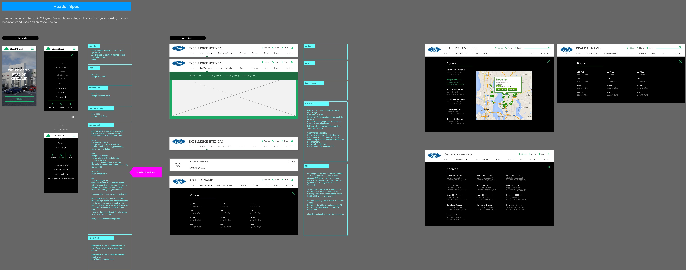

CDK Global
UI/UX Designer
Note
As a UI/UX designer at CDK Global, I spent most of my time creating wireframes, mocks and design specs for their new NextGen platform. Here are my few roles:
- One of the UI/UX designer that helped launched Factory Pre-Owned Collection
- Helped explore and analyze user strategies for their new NextGen platform, a content management system focused on the automotive industry.
- Also helped with their NADA demo sites, such as Torn Paper and Asteroid, to help showcase the business objectives and design initiatives of NextGen.
- One of the UI/UX designer that helped launched CDK's NextGen Lexus and Cadillac Dealership site. So far over 70+ dealership is using the theme and is being used as the guideline/outline for newer themes.
- Collaborate and work closely with Developers to find the correct algorithmn for a dynamic and responsive website for NextGen.
- Trained other departments on how to configure the NextGen editor to get good visual results.
- Manage and create design JIRA stories and analyze what needs to be done, design solutions, Wireframes/Prototype and facilitate to get the product, features or enhancement, implemented and then validate to make sure the results are what's expected.
- Update and research new features for NextGen.
NEXTGEN PLATFORM
- Goal: Launch New layout/framework called 'NextGen'.
- Role: UI/UX Designer
- Problem: New concept, new framework and dynamic content. You can look at one of their old tetra site HERE
- Solution: Besides the hi-fidelity mocks of what the site should look, create wireframes for good and worst case scenarios based on dynamic content. Research tetra site for existing content. And make sure to collaborate with other department.
- Outcome: We launched our NADA demo and we used what we learned from that experience to finally launch NextGen. We were able to launch Lexus dealership successfully along with Cadillac and various Chevy sites. We currently have 7000+ LIVE sites using NextGen framework. Since NextGen have launched, there has been many iterations, new designs, new features, new content and new dealership using it. NextGen is still being refined and we are learning what worked and what didn't. You can look at the live site for Lexus HERE or our Cadillac websites HERE.
Tool
Adobe Photoshop, Axure, Illustrator
Lo-Fidelity Mocks or Wireframes to showcase how carousel will work with configuration and how it will work responsively from desktop to mobile. Redlining for the developers, this is where we collaborate w/ the developers to produce the product.  Mocks of what some of the pages will look. Hi-Fidelity mocks to be used for presentations, to present it's responsive and device friendly features.
Hi-Fidelity mocks to showcase what the product will result to, with configuration changes.
Hi-Fidelity mocks to be used for presentations, to present it's responsive and device friendly features.
Hi-Fidelity mocks to showcase what the product will result to, with configuration changes.